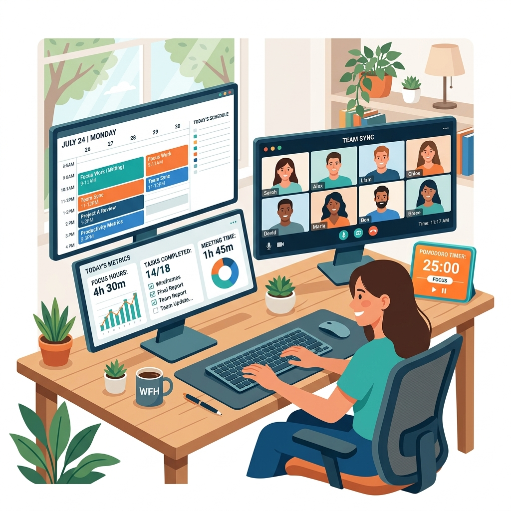

Working from home offers unparalleled freedom — no daily commute, comfortable clothes, and a customized environment. However, **this flexibility is a double-edged sword**. Without a structured physical setup and strict mental boundaries, the line between "work life" and "home life" blurs. You either find yourself constantly distracted by household chores, or working late into the night, leading to severe burnout.
Achieving peak remote productivity requires treating your home office with the same discipline as a physical corporate workspace. Here is your roadmap to professional deep work.

The Telecommuting Evolution: From Oil Crises to Distributed Engines
The concept of working outside a traditional office environment is not a modern luxury of the 21st century; its roots trace back to the early 1970s. During the 1973 OPEC oil embargo, aerospace engineer Jack Nilles coined the terms "telecommuting" and "telework" as a scientific framework to reduce commuting-related energy consumption. The technological landscape, however, was highly restrictive. Professionals relied on static landline networks and physical paper couriers, rendering remote collaboration slow and inefficient.
The real structural breakthrough arrived with the convergence of high-speed broadband internet, reliable cloud hosting architecture, and distributed collaboration tools in the 2010s. What began as a localized contingency plan for extreme weather or transport disruptions rapidly evolved into a global organizational strategy. By 2026, remote work has matured from a simple "home office perk" to a highly sophisticated system of geographically distributed, high-performance nodes. This shift has redefined the metrics of employee contribution, moving from visual presence in a physical office (which acted as a flawed proxy for productivity) to objective, artifact-based output and clean, asynchronous execution.
1. Separate Your Spaces: The Physical Boundary
Your brain is highly associative. If you work in bed, your brain associates that space with active, analytical thinking, leading to insomnia. If you sleep where you work, you will struggle to focus during the day.
- Designate a Dedicated Zone: Set up a specific desk and chair used *only* for work. Even if you live in a small studio apartment, dedicate a specific corner that is strictly for professional tasks.
- Ergonomics Matter: Invest in a high-quality office chair that supports your lower back and keep your computer monitor at eye level. Physical fatigue and neck strain are major, hidden drains on concentration.
- Workday "Shutdown" Routine: At the end of your shift, pack up your laptop, shut down your screen, and step away. This physical act signal to your brain that the professional day is officially closed.
The Science of High-Performance Remote Work: Cognitive Latency and Chronobiology
To master remote productivity, one must understand the underlying neurobiology and engineering principles of human attention. The human brain is not a multi-threaded parallel processor; rather, it operates as a sequential single-core CPU that relies on complex neural switching mechanisms. When these mechanisms are disrupted, efficiency drops exponentially.
1. Asynchronous vs. Synchronous Communication Mechanisms
In classical synchronous communication (meetings, rapid instant messages), the time lag between transmission and response approaches zero. While this is highly effective for urgent crisis management or high-entropy brainstorms, it carries a crippling cognitive overhead. Every time an instant message sounds its alert, it forces a context switch. A famous study by Gloria Mark at the University of California, Irvine, revealed that it takes an average of 23 minutes and 15 seconds to return to a deep work task after a single disruption.
To model this mathematically, we can express the total Interruption Cost ($C_{int}$) over a work block as:
Where λ represents the arrival rate of interruptions. If your arrival rate of notifications is high, your net productive deep-work time approaches zero, leaving you in a state of chronic cognitive fragmentation. Asynchronous communication, conversely, decouples message creation from consumption. By utilizing documentation-first strategies, structured project tracking boards, and client-side, local browser tools (like Shader7's offline receipt and resume tools), you eliminate the reliance on continuous, high-latency synchronous pings.
2. Chronobiology and Ultradian Rhythms
Peak performance is inherently tied to our internal biological clocks. The human body operates on 24-hour circadian cycles, but our cognitive endurance operates on much shorter Ultradian Rhythms. Typically, the human brain can sustain high-frequency cognitive processing for approximately 90 to 120 minutes before neural fatigue sets in. At this threshold, oxygen saturation in the prefrontal cortex declines, and adenosine begins to accumulate.
The Pomodoro Technique is a practical implementation that respects these biological cycles. By enforcing a 25-minute focus window and a 5-minute cognitive reset (or a 50-minute focus window followed by a 10-minute break for deep-flow programming), you reset your attentional capacity. The active break allows the brain to clear metabolic byproducts and consolidate information in the default mode network (DMN), facilitating creative problem-solving.
3. The Ergonomics and Kinematics of Posture
Remote productivity is not merely a mental construct; it is physical. Poor workspace kinematics degrade cognitive stamina through constant nociceptive feedback (minor pain signals sent from muscles to the brain). When sitting, the human spine experiences the highest level of intradiscal pressure in the lumbar region. A non-ergonomic setup that forces a forward-head posture (looking down at a laptop screen) increases the effective weight of the head on the cervical spine from 12 pounds at neutral to up to 60 pounds at a 60-degree tilt. This physical fatigue triggers the release of cortisol, which directly inhibits the executive function of the prefrontal cortex, leading to premature mental exhaustion.
2. High-Performance Schedule Management
Successful remote workers do not simply open their laptops and "start working." They control their day using structured scheduling frameworks:
- Time Blocking: Divide your day into dedicated time blocks for specific tasks. For example: Block 1 (9:00 - 11:00 AM) is strictly for **Deep Work** (no checking emails, no meetings, pure coding/design). Block 2 (11:00 AM - 12:30 PM) is for **Administrative Tasks** (emails, invoicing, client follow-ups).
- The Pomodoro Technique: To maintain high focus levels, work in cycles of **25 minutes of deep focus** followed by a **5-minute break**. After 4 cycles, take a longer 20-30 minute walk to clear your eyes.
- Asynchronous Communication: Stop responding to instant messages within 30 seconds. Constantly breaking focus to answer minor chats destroys deep concentration. Check communications in batched blocks (e.g., once every 2 hours).
Structuring Workflows: Async vs. Sync Comparative Analysis
Achieving remote work operational excellence requires a deliberate balance between async and sync communication. The table below outlines when to employ each method to minimize cognitive context-switching costs.
| Communication Mode | Primary Use Case | Response SLA | Attentional Demand |
|---|---|---|---|
| Asynchronous (Documentation, Email, Git) | Deep-focus updates, code reviews, status reporting, non-blocking inquiries. | 4 to 24 Hours | Low (Batched checking) |
| Synchronous (Standups, Instant DMs) | Blocker removals, immediate alignment, simple coordinate points. | 1 to 2 Hours | Medium (Intermittent) |
| Real-Time Sync (Video Calls, War Rooms) | Urgent incident response, strategic brainstorming, sensitive feedback. | Instantaneous | High (Interruptive) |
Weekly Productivity Metrics Dashboard
You cannot optimize what you do not measure. Use this metric framework to assess your weekly performance trends objectively:
| Key Metric | Calculation Method | Ideal Target | Corrective Action |
|---|---|---|---|
| Deep Work Ratio | (Uninterrupted focus hours / total hours) x 100 | > 45% | Block off mornings as "No Meeting Zones" in calendar. |
| Context Switch Frequency | Number of times email or chat is opened per hour | < 2 times/hr | Quit communication clients; use browser-level distraction blockers. |
| Task Completion Velocity | Planned backlog items completed vs. committed | > 85% | Deconstruct macro milestones into micro tasks (e.g. < 2 hours each). |
| Admin Efficiency | Time spent on non-billable workflows (invoicing, media compression) | < 10% of week | Leverage dedicated client-side browser utilities (Image Compressors, Receipt Makers). |
Step-by-Step Blueprints for Peak Performance
Transitioning from standard workspace paradigms to high-level remote efficiency requires actionable systems. Follow these two structured checklists to audit your workspace and optimize your workday schedule.
1 The Ultimate Ergonomic & Environmental Audit Checklist
- Optic Path & Eye Level: Adjust the top-edge of your display monitor to align precisely with your straight-ahead line of sight. Maintain a focal distance of 20 to 30 inches (approximately one arm's length) from your eyes to the screen.
- Kinematic Alignment: Keep your elbows flexed at a 90-degree angle, with your forearms resting flat on armrests or desk surfaces parallel to the floor. Your knees should also maintain a 90-degree angle with feet resting flat on the ground or a dedicated footrest.
- Lux & Light Balancing: Ensure your room's ambient illumination matches your monitor's brightness. Avoid placing screens directly in front of open windows to prevent severe back-lit glare.
- Acoustic Hygiene: Utilize active sound dampening or passive noise-canceling headsets during critical deep work blocks. Introduce low-frequency brown noise to mask distracting, ambient household sounds.
2 The 3-Tier Daily Calendar Blocking Blueprint
To implement a structured calendar, divide your working hours into three rigid zones:
- Maker Zone (3-4 Hours Daily): Scheduled during your peak circadian energy windows (typically mornings). Block off your calendar as "Busy" and activate focus filters. Zero communication tools allowed.
- Manager Zone (2-3 Hours Daily): Reserved for synchronous meetings, cross-functional alignment sessions, team standups, and cooperative pairing.
- Admin & Utility Zone (1-2 Hours Daily): Scheduled at the end of your day. Use this block to organize your bookmarks, batch-process incoming emails, update receipts, and run browser-level calculations or photo compressions using Shader7's offline suite.
3. Creating an Online "Deep Work" Browser Setup
Your web browser is a gatekeeper for extreme focus or extreme distraction. Build a clean browser layout:
- **Close Distracting Tabs:** Never leave social media accounts logged in during deep focus blocks.
- **Leverage Fast Web Tools:** Minimize heavy software programs that slow down your computer. Utilize browser-first, privacy-focused utilities (like image compressors, resume builders, and receipt makers) to handle routine tasks instantly.
- **Track Metrics:** Maintain simple, structured records of your time, expenses, and invoices using local tools so you can analyze your productivity trends at the end of the month.
Frequently Asked Questions: Remote Workspace Optimization
Q1: How do I manage cross-time-zone collaboration without staying online 24/7?
Managing collaboration across diverse time zones requires transitioning from immediate ping-reply loops to high-quality asynchronous documentation. Establish clean handover protocols: at the end of your day, record a 2-minute video walkthrough or write a comprehensive markdown log outlining the current project state, potential blockers, and next immediate steps. This ensures that teammates in other hemispheres can proceed without needing real-time sync, respecting your personal boundaries and enabling true offline separation.
Q2: Is the 25-minute Pomodoro cycle suitable for long-flow work like software engineering or creative design?
While the traditional 25-minute cycle is exceptional for high-resistance tasks (like writing emails or clearing backlog tasks), it can feel disruptive for deep development or artistic work that requires entering a deep flow state. In these cases, adopt the "Double Pomodoro" or "Flow-Time" strategy: execute focus blocks of 50 or 60 minutes, followed by a 10-minute rest. The core principle is not the exact duration, but the clean boundary between focused execution and complete biological relaxation.
Q3: How do I handle roommates or family members crossing my physical workspace boundaries?
Establishing spatial priming and visual signals is essential. Use explicit, objective cues to indicate your current availability. For example, a simple, red-light/green-light LED on your door, or wearing physical noise-canceling headphones can serve as passive signals that you are in a "deep work block." Additionally, sit down with your household and establish clear working hours, explaining that physical presence in your dedicated workspace is equivalent to being out of the house.
Q4: Why are local, browser-first tools superior to heavy desktop software for remote work?
Local, client-side browser tools—such as Shader7's image compressors and receipt generators—are superior for three reasons: privacy, speed, and hardware utilization. Unlike traditional cloud services that upload your personal PDF records or confidential images to external servers (exposing you to potential data leaks), local web apps process your data directly in your browser's RAM using JavaScript WebAssembly. This means zero files leave your machine, processing is nearly instantaneous, and you avoid background process bloat that drains your computer's resources.
Boost Your Remote Freelance Operations
Shader7 offers an essential toolkit of free, client-side web apps designed specifically for independent freelancers and modern remote workers. Generate professional resumes, compile billing receipts, compress project media, and split group trip expenses securely in your browser.
View All Free Tools →Standard Operating Procedure (SOP): The Daily Remote Shutdown Routine
To protect your mental health and maintain clear boundaries when working from home, follow this strict Standard Operating Procedure (SOP) at the end of every single workday (preferably at a fixed time, e.g., 5:00 PM):
- ☐ 1. Calendar Time-Blocking reconciliation: Review your calendar. Move any incomplete tasks from today's time blocks to tomorrow's pre-scheduled focus boxes.
- ☐ 2. The Rule of Three Daily Planning: Select and write down exactly three high-impact tasks to accomplish by tomorrow evening. Place these at the top of your to-do journal.
- ☐ 3. Communication Status Shutdown: Set your Slack, Teams, and email communication statuses to "Offline / Away." Close all messaging applications on your device.
- ☐ 4. Desktop File Zeroing: Organize all temporary files, screenshots, and drafts created during the day into their respective Category folders in your directory tree.
- ☐ 5. Workspace Departure: Shut down your work monitor, clean your desk, stand up, and physically leave your workspace, signaling to your brain that the workday is legally over.
Advanced Task Management: The Physics of Time Blocking
To optimize your remote workday, you must implement **Time Blocking**—a task management system where you partition your entire day into dedicated, pre-scheduled time boxes. Rather than maintaining a static, reactive list of things to do, you assign every task a physical slot on your calendar. This forces you to confront the reality of **Time Scarcity**: you only have a fixed number of productive hours per day, preventing you from over-committing.
Furthermore, time blocking helps you segment **Reactive Time** (answering messages, team syncs, administrative tasks) from **Creative Deep-Work Time**. By blocking off 2-3 hours of uninterrupted "deep work" on your calendar and setting your communication status to offline, you create a cognitive boundary that prevents context switching, allowing your brain to enter a state of deep flow, maximizing daily output and preventing work-from-home stress.
Case Studies: Taming Remote Work Chaos
Case Study 1: The Burned-Out Lead Developer who Recovered 15 Hours a Week
The Scenario: A remote lead software engineer was drowning in work. They kept Slack open on a secondary screen, answered every message within 90 seconds, and attended 6 synchronous sync meetings a day, working 65 hours a week but falling behind on actual code delivery.
The Failure: The constant stream of message notifications triggered severe **context switching**. The developer spent their entire day reacting to minor issues, forcing them to write code late at night when the notifications stopped. This triggered severe sleep deprivation, chronic cognitive exhaustion, and physical burnout, leading to a major drop in team productivity.
The Correction: The developer implemented a strict **Asynchronous Collaboration Protocol** and time-blocked their calendar. They scheduled two 90-minute "Deep Work" blocks daily, set their Slack to "Away" during focus blocks, and moved 4 synchronous sync meetings to weekly asynchronous project boards. Within 3 weeks, their weekly work hours dropped from 65 to 45 hours, while their core code output doubled, proving that asynchrony is a vital remote survival tool.
Standard Operating Procedure (SOP): Home Office Ergonomic Audit
Physical wellness is the foundational pillar of high cognitive output. To ensure your home office workspace is configured to prevent repetitive strain injuries (RSI), neck strain, and back pain, execute this detailed ergonomic safety audit quarterly:
- ☐ 1. Chair Height and Hip Angle Calibration: Sit with your back flat against the chair. Adjust the cylinder height until your feet rest flat on the floor. Your hips and knees should form a perfect 90-to-100 degree angle, with your thighs parallel to the ground to completely eliminate pressure on your sciatic nerve.
- ☐ 2. Armrest, Desk Height, and Wrist Neutrality: Rest your forearms on the armrests. Adjust armrest height until your elbows form a 90-degree bend. The desk top should be level with your forearms, ensuring your wrists remain completely flat and neutral when typing. Avoid resting wrists on sharp desk edges, which compresses the carpal tunnel.
- ☐ 3. Monitor Eye-Level Alignment: Sit in your normal working posture. Position your primary monitor directly in front of you, exactly an arm's length away. The top third of the screen must align directly at your horizontal eye level. This prevents you from tilting your chin down or neck forward to read.
- ☐ 4. Lumbar Support and Spinal Geometry: Adjust the chair's lumbar support pad so it curves gently into the lumbar lordosis (the natural inward curve of your lower spine). If your chair lacks built-in lumbar adjustment, place an ergonomic lumbar roll at the beltline to maintain proper spinal posture.
- ☐ 5. Specular Reflection and Ambient Illumination: Conduct a visual inspection for reflections. Ensure your monitor is placed perpendicular to windows and bright lights. Ambient room lighting should be approximately 300 to 500 lux, matching screen brightness to prevent visual strain and chronic headaches.
The Biomechanics of Spinal Load: Calculating Neck Torque
To understand why monitor height is so critical, we must examine the physics of spinal loading. The average human head weighs approximately 5 kilograms (11 pounds) when perfectly balanced in a neutral upright posture. However, when you tilt your head forward to look down at a poorly positioned monitor or laptop screen, the cervical spine must act as a lever arm to hold the skull against gravity.
The torque $T$ acting on your cervical spine can be calculated using the rotational torque equation:
Where $F$ is the gravitational force acting on the head's mass, $d$ is the distance from the cervical vertebrae to the center of mass of the head, and $ heta$ is the angle of forward head tilt. At a 0-degree tilt, the torque is virtually zero because the weight is supported directly by the skeletal structure. However, at a 15-degree forward tilt, the effective weight on the neck increases to **12 kilograms (27 pounds)**. At a 60-degree tilt—a common posture when looking at a laptop placed flat on a table—the neck must support a staggering **27 kilograms (60 pounds)** of force! This chronic load strains muscles, compresses intervertebral discs, and leads to permanent spinal alignment issues, highlighting why laptop stands and monitor arms are vital ergonomic tools.
Circadian Rhythms, Spectral Quality, and Screen Lighting Physics
Beyond physical posture, your workspace's visual environment dictates your daily energy levels and cognitive capacity. The human body's circadian rhythm is regulated by specialized cells in the retina called **intrinsically photosensitive retinal ganglion cells (ipRGCs)**. These cells contain a photopigment called melanopsin, which is highly sensitive to blue light wavelengths between 460nm and 480nm.
When high-intensity blue light hits these cells, it sends signals to the suprachiasmatic nucleus (SCN) in the brain to suppress the production of **melatonin** (the sleep-inducing hormone), signaling high alertness. During the morning, exposure to bright blue light is beneficial. However, in the late afternoon and evening, exposure to blue light from screens disrupts your sleep cycle, leading to chronic fatigue. Remote workers must manage this by setting their screens to dynamically warm their color temperature (reducing blue spectral output to 2700K) after sunset, and ensuring that workspace task lighting provides a high **Color Rendering Index (CRI > 90)** to maintain optical health and visual comfort.
Strategic Industry Forecast: Asynchronous Virtual Workspaces & Spatial Computing
As the landscape of professional collaboration progresses, remote work is transitioning beyond standard video conferencing and simple text chat channels. We are entering the era of **Spatial Computing and Virtual Asynchronous Workspaces** (utilizing advanced VR/AR headsets like Apple Vision Pro or Meta Quest Pro). In these virtual environments, the traditional constraint of physical distance is completely neutralized. Remote professionals collaborate inside three-dimensional, virtual project rooms, organizing documents, code libraries, and design mockups in spatial coordinate spaces.
However, spatial computing introduces new cognitive challenges, particularly regarding **Digital Fatigue** and **Virtual Attention Spans**. Working inside a headset increases the sensory load on the brain, making strict time-blocking and focus-rest cycles even more critical. In the future virtual office, the highly disciplined remote worker will be the one who successfully controls their focus blocks, uses asynchronous avatars to participate in non-essential meetings, and schedules physical, offline breaks to recharge their cognitive reserves, proving that personal focus and self-discipline remain the ultimate multipliers of professional success regardless of technological shifts.
The Cognitive Science of Focus: Managing Attention & Asynchrony
To master remote work productivity, a professional must understand the cognitive science of attention. Working from home is not merely a change of location; it is a fundamental shift in cognitive load. In a traditional office, structural boundaries (drives, meeting rooms, social presence) enforce focus. In a home environment, these boundaries dissolve, leaving you susceptible to **Context Switching**—the cognitive tax incurred when shifting focus between tasks.
Every time you interrupt your deep work to check a slack message or check email, your brain incurs a **Cognitive Refractory Period** lasting up to **23 minutes** to return to the previous level of deep focus. To combat this, remote workers must implement **Asynchronous Communication Protocols**. By allocating dedicated, isolated focus blocks (using techniques like the Pomodoro method or deep timeboxing) and communicating through asynchronous channels (where immediate responses are neither requested nor expected), you protect your cognitive capacity, increase your daily output, and prevent remote burnout.
Exhaustive Remote Work Productivity FAQs
Q1: How does context-switching tax our brain's cognitive reserves during remote work?
Context-switching occurs when you interrupt your active focus on a primary task to address a secondary input (such as an incoming chat notification, phone call, or email). From a cognitive science perspective, your brain cannot multi-task; instead, it rapidly switches its neural network configurations. This transition is incredibly expensive: it devours glucose and oxygen reserves in your prefrontal cortex, leading to rapid mental fatigue and high error rates. Studies show that a worker interrupted frequently takes up to 23 minutes to rebuild their previous state of deep flow, meaning constant communication notifications actively destroy productivity.
Q2: Why is asynchronous communication the cornerstone of highly efficient remote teams?
Asynchronous communication is a protocol where messages are sent without expecting an immediate response. It is the opposite of synchronous communication (like face-to-face chats, zoom calls, or instant messaging). Asynchrony allows team members to protect their focus. They block off large chunks of uninterrupted time for deep engineering or creative work, check messages only at designated intervals (e.g., twice a day), and reply with highly detailed, contextual documents. This protocol eliminates the constant interruption cycle, respects varying timezones, and shifts team culture from "presence tracking" to actual "output generation."
Q3: How do circadian rhythms dictate our optimal daily cognitive focus blocks?
Circadian rhythms are 24-hour internal biological clocks that regulate our sleep-wake cycles, body temperature, and hormone levels (including cortisol and melatonin). Cognitive performance fluctuates predictably throughout the day. Most people experience a **cortisol peak in the morning**, making the first 4 hours of the day ideal for high-impact, analytically demanding tasks (deep coding, strategic writing). The afternoon typically brings a post-lunch energy dip, which is the optimal time to schedule low-energy, administrative tasks (meetings, sorting email, file organizing), aligning work to natural biological energy levels.
Q4: Why are local browser-based productivity tools safer for corporate data compliance?
Using third-party cloud-based productivity apps requires pasting corporate data, project plans, and sensitive source code onto external servers. This creates massive data compliance risks (such as violating GDPR or corporate non-disclosure agreements). Browser-based local tools process your inputs strictly in your local browser sandbox RAM. Your project files and corporate data are never uploaded to the web, remaining entirely within your local device memory, guaranteeing 100% data security and compliance with enterprise privacy standards.
Q5: How does the Pomodoro Technique prevent mental fatigue and burnout?
The Pomodoro Technique is a time-management framework that divides work into 25-minute focus intervals (Pomodoros) separated by 5-minute short breaks. After completing four cycles, you take a longer 20-minute break. This structure leverages cognitive recovery principles. Our brain's high-intensity attention networks can only maintain peak focus for 45-90 minutes before performance drops. The short, structured 5-minute breaks allow the brain's Default Mode Network (DMN) to activate, processing and consolidating information, restoring energy, and preventing cumulative mental fatigue.
Q6: How do I construct a physically ergonomic workspace to prevent repetitive strain injuries (RSI)?
An ergonomic workspace is essential to prevent musculoskeletal injuries. First, adjust your chair height so your feet rest flat on the floor and your knees are at a 90-degree angle. Position your keyboard and mouse so your elbows are bent at a 90-degree angle, with your wrists remaining flat and neutral (avoid upward wrist bending). The top of your computer monitor must be aligned directly at your eye level, tilted back slightly, ensuring your neck remains upright and strain-free, reducing the risk of carpal tunnel syndrome and neck fatigue.
Q7: What is the "Rule of Three" daily goal-setting method, and why does it work?
The "Rule of Three" is a productivity framework where you select exactly **three high-impact tasks** to accomplish by the end of the day. Unlike a massive, exhausting to-do list that triggers decision paralysis and anxiety, limiting daily targets to three forces you to prioritize ruthlessly. It helps you separate "noisy, administrative tasks" from "critical, high-value outcomes," ensuring that even if your day is filled with meetings, you focus your core energy on the tasks that move projects forward.
Q8: How do I maintain clear physical and psychological boundaries when working from home?
Working from home risks "role-blurring," where your home environment becomes psychologically linked with work stress. To prevent this, establish a **dedicated physical workspace** (an office or specific desk corner) that is used strictly for work, and leave this space when the day is done. Additionally, implement a "Shutdown Ritual" (closing all tabs, organizing your physical desk, and writing tomorrow's to-do list) to signal to your brain that the workday is legally over, allowing your mind to rest and recover fully.